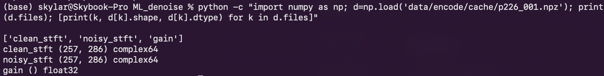
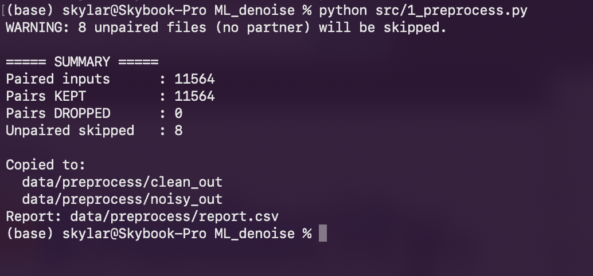
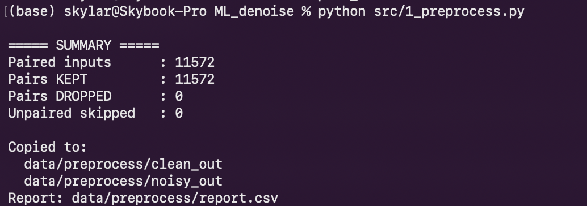
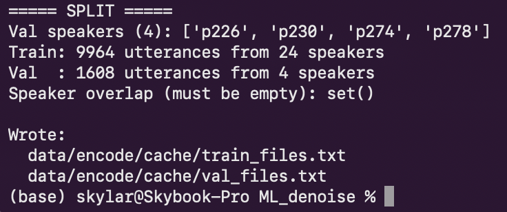
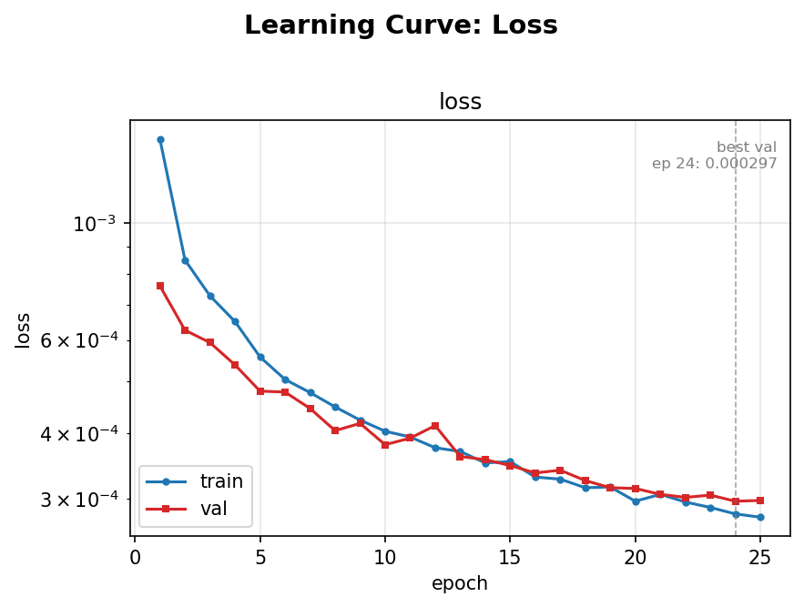
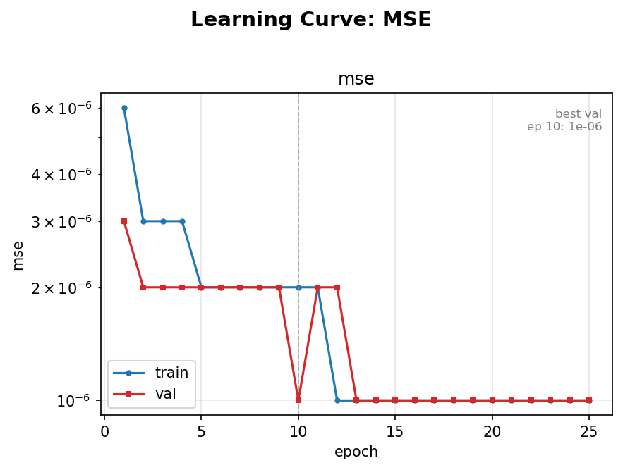
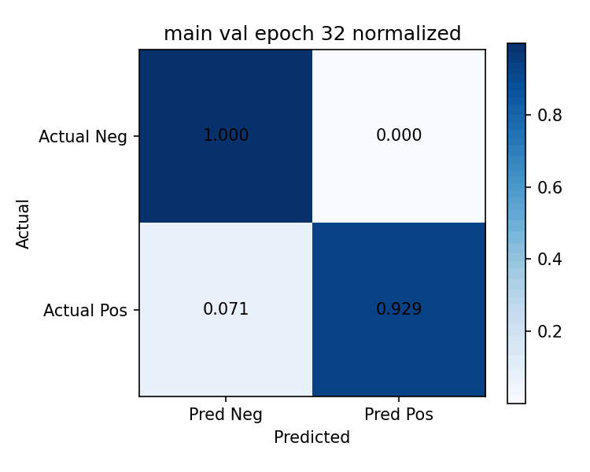

Speech noise reduction using LSTM neural networks

Listen for yourself
Same sentence, three ways. Headphones recommended!
So here is what I did
This one was all me: no group members, and I wrote every line of the code, from the data validation scripts all the way to the training loop and the inference tools. The goal is pretty simple to say and pretty hard to do. Take a recording of someone talking with a bunch of junk in the background (traffic, other people talking, wind, electronic hum), and give back just their voice, as cleanly as possible, using a neural network I trained myself.
I trained it on the University of Edinburgh’s Noisy Speech Database, which has 11,572 pairs of the exact same recording: one clean, and one with noise mixed in, from 28 different speakers. The model learns the “difference” between the noisy and clean versions, and then has to figure out that difference on its own for audio it has never heard before.
How it works
The model never actually looks at the raw audio samples. Noise is really a frequency problem, so first, every file goes through a short-time Fourier transform (STFT). That chops the audio into tiny 32 ms frames (512 samples at 16 kHz) and breaks each frame into 257 frequency bins, so a recording turns into a grid of little spectral pieces, one column per frame.
Then the LSTM walks through those frames in order, and for every single bin in every frame, it infers a weight between 0 and 1 for the mask. Basically, “how much of this little piece is voice?” Multiply the noisy spectrum by the mask (keeping the original phase), run an inverse STFT, and out comes the clean audio.

Why an LSTM? Noise changes over time, but between two 32 ms frames it barely changes at all, so knowing what the mask was a moment ago makes it way easier to guess what it should be now. That makes it a sequence problem, which is exactly what recurrent neural networks are for. A plain RNN would basically forget anything more than a few frames back (vanishing gradients: hundreds of numbers smaller than 1 multiplied together end up as nearly 0), and a single file has hundreds of frames. An LSTM’s cell state adds instead of multiplies, so it can keep context from way earlier in the recording.
Two versions
I trained two separate models, because “best possible quality” and “works live” pull in opposite directions.
Real-time
Unidirectional (causal) LSTM
Only ever uses past frames, so it can clean up audio live as it comes in, like in conference call software where the future hasn’t happened yet. This is the one I think would actually get used in the real world.
- Context
- Past frames only
- Sample rate
- 16 kHz (the important part of the hearing range for speech)
- Frame size
- 512 samples (32 ms)
- Training
- 25 epochs, batch size 4
High quality
Bidirectional LSTM
Uses past AND future frames to figure out each one, so it needs the whole file first. It’s for cleaning up recordings after the fact, and it sounds noticeably better. It was honestly surprising how much detail it dug out of the voices that the noise had been covering up.
- Context
- Past and future frames
- Sample rate
- 44.1 kHz (the full hearing range)
- Frame size
- 2048 samples (about the same window length in time)
- Training
- 32 epochs, batch size 8
Even the high-quality model runs way faster than real time on most computers, so cleaning up a whole recording takes much less time than listening to it.
Making sure the data is actually good
Before training anything, I wrote a validation script that checks every pair: does each clean file have a noisy partner, and is anything silent (nothing louder than −40 dBFS), clipped, way too short (under 1 second), at the wrong sample rate, or carrying a DC offset? The Edinburgh dataset is super well curated, so nothing in it actually failed. That’s not a great test of a validation script though, so I broke the dataset on purpose (deleted 8 partner files, added silent files, a full-scale square wave, and tiny white noise clips) and made sure it caught every single one.


I also split the training and validation data by speaker instead of by file, so no voice shows up in both (24 speakers to train on, 4 held out). Otherwise the model could just get really good at the training speakers’ voices, and the validation scores would look better than it would actually do on a stranger.

Training and results
Recordings are all different lengths, so each batch gets padded to the longest one, and then PyTorch’s sequence packing plus a masked MSE loss make sure the padding never counts toward anything. Training uses the Adam optimizer, saves a checkpoint every epoch (every single one is in the repo), and I built a grid search for the hyperparameters (hidden size, number of layers, learning rate, dropout, and weight decay) so I didn’t have to guess.
The first few epochs sounded garbled and watery (totally unintelligible), but by the last ten, the output was almost always clearer than the noisy input. Both final models ended up with ROC-AUC ≥ 0.99995, MSE ≤ 10−6, and loss ≤ 4 × 10−4. These learning curves are from the real-time run:


Denoising is really a regression problem, but if you threshold the predicted mask values, you can check how often each bin lands on the right side. Basically no false positives for either model, and the high-quality one catches a bit more of the “keep this” bins (92.9% vs 91.4%):

Do you want to talk about this one too?
I definitely do!!!